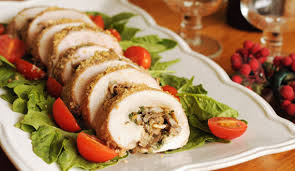

receta: rollos de pollo

ingredientes
- 1 lb de pollo molido
- 1/2 lb de jamon de pollo
- 1 tasa de espinaca
- sal y pimienta blanca
- 1 ramita de tomillo
- 1 cucharada de mantequilla
- 1 diente de ajo
- 1 tasa de caldo de pollo
- papel aluminio
pasos
- mezcle el pollo molido con el jamon picado y la espinaca finamante picada
- condimente la sal y pimienta con las hojas de tomillo
- derrita la mantequilla,mezcle con el ajo picado y agregue a la preparacion
- ponga la mezcla sobre el papel aluminio y dele forma de tuvo
- agregue en un purex el caldo de pollo
- hornee ah 325 grados